Getting started
The TRE Open OnDemand service is a web service that runs within a safe haven. The service provides a suite of apps that allows you to run compute and data-related tasks and packages on compute resources available to your safe haven. Here, we introduce by means of a walkthrough, Open OnDemand and its apps.
First, some Open OnDemand terminology. A compute resource upon which tasks can be run is called a back-end, or, in some parts of Open OnDemand, a cluster. Each run of a task on a back-end is called a job. An Open OnDemand component that allows you to run jobs, or other useful functions, is called an app.
This walkthrough is centred around three apps:
- Run Batch Container runs a software container on a back-end. This app is designed to run batch containers, those that perform some computational or data-related task without human interaction when they are running.
- Run JupyterLab Container runs an interactive JupyterLab service, within a container, on a back-end. Please be reassured that no Python knowledge is assumed or required!
- Active Jobs allows you to see which of your jobs have been submitted, are running, or have completed.
Where Open OnDemand stores your information - your ondemand directory
Within your home directory on the Open OnDemand VM, Open OnDemand creates an ondemand directory. This is where Open OnDemand stores information about your current session and previous sessions.
Every time a job is created by an app, Open OnDemand creates the job files the app needs for it to run, and log files when it is running, within a job-specific job context directory in an app-specific directory.
For most back-ends, your home directory is common to both the Open OnDemand VM and the back-ends so your directories and files on the Open OnDemand VM, and changes to these, are reflected on the back-ends and vice-versa.
However, you may have access to back-ends where your home directory is not common to both the Open OnDemand VM and the back-end i.e., you have unsynched, separate, home directories on each VM. Currently, the back-ends where home directories are not common to both the Open OnDemand VM and the back-ends are as follows:
- Superdome Flex, shs-sdf01.nsh.loc.
- All DataLoch VMs.
To use such back-ends, you need to do some set up to allow Open OnDemand to automatically copy job files from within your ondemand directory to your chosen back-end when you submit a job.
As Superdome Flex is not used in this walkthrough, this set up only needs to be done by users of the DataLoch safe haven who should now follow the instructions in Enable automated copy of job files to a back-end to enable this for the 'desktop' VM on which you are running the browser in which you are using Open OnDemand, before returning to this page.
Run the Run Batch Container app
Run Batch Container runs a batch container on a back-end. By batch container we mean a container that performs some computational or data-related task without human interaction when it is running.
Click the 'Run Batch Container' app on the Open OnDemand home page.
The 'Run Batch Container' app form will open.
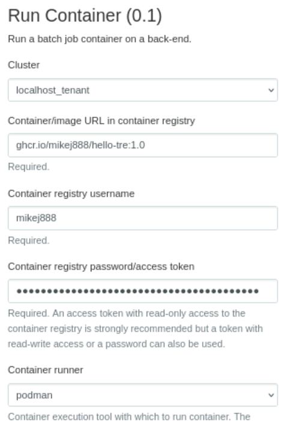 Excerpt of Run Batch Container app form
Review and complete the Run Batch Container app form
The app form is prepopulated with the configuration to pull and run a 'hello TRE' container. When run, the container logs a greeting and information about directories mounted into the container.
Read the form entries in conjunction with the explanations below and make the suggested changes:
- Cluster: A back-end (cluster) within your safe haven on which to run the container. Back-end-specific short-names are used in the drop-down list. If there is only one back-end available to you then this form field won't be shown.
- Select the 'desktop' VM on which you are running the browser in which you are using Open OnDemand.
- Container/image URL in container registry: URL specifying both the container to run and the container registry from which it is to be pulled.
- Leave this value as-is to use the
git.ecdf.ed.ac.uk/tre-container-execution-service/containers/epcc-ces-hello-tre:1.1container, hereon termedepcc-ces-hello-tre.
- Leave this value as-is to use the
- Container registry username: A container registry username is required.
- Leave this value as-is.
- Container registry access token: An access token associated with the username is required. Using an access token that grants read-only access to the container registry is strongly recommended.
- Leave this value as-is, the access token provides read-only access to pull the container.
- Container runner: Container runner - 'podman' or 'apptainer' - with which to run the container.
- Leave this value as-is i.e., 'podman', as this is available on all back-ends.
- Container name (Podman only): Name to be given to the container when it is run. Your job will fail if there is already a running container with that name. If omitted, then the default container name is
CONTAINER_NAME-SESSION_ID, whereCONTAINER_NAMEis derived from the image name (if the image name ismy-container:1.0thenCONTAINER_NAMEismy-container) andSESSION_IDis a unique session identifier for the app's job.- Leave this value as-is.
- CPUs/cores: CPUs/cores requested for the app's job. To run jobs via Open OnDemand requires you to select the resources you think your job will need, including the number of CPUs/cores.
- Leave this value as-is as the all back-ends can provide the default number of cores, and the
epcc-ces-hello-trecontainer does not need any more.
- Leave this value as-is as the all back-ends can provide the default number of cores, and the
- Memory (GiB): Memory requested for the app's job.
- Leave this value as-is as the all back-ends can provide the default memory, and the
epcc-ces-hello-trecontainer does not need any more.
- Leave this value as-is as the all back-ends can provide the default memory, and the
- Use GPU?: Request that the container use a GPU. This option is only shown for back-ends that have a GPU.
- Leave this value as-is, as the
epcc-ces-hello-trecontainer does not require a GPU.
- Leave this value as-is, as the
- Container runner command-line arguments: Command-line arguments to pass to the chosen container runner to control its behaviour.
- Leave this value as-is, as the container does not require any such options to be set.
-
Environment variables: Environment variables to be set within the container when it runs.
- Each line should define one environment variable and value, each in the form,
ENVIRONMENT_VARIABLE=value. - The
epcc-ces-hello-trecontainer looks for aHELLO_TREenvironment variable. If set, then the container will print the variable's value as a greeting. If undefined, then the greeting isHello. -
Enter:
HELLO_TRE=Hello there
- Each line should define one environment variable and value, each in the form,
-
Container-specific command-line arguments: Container-specific command-line arguments to be passed to the container when it is run. The
epcc-ces-hello-trecontainer supports two container-specific arguments:- A
-d|--duration INTEGERargument which causes the container to sleep (pause) for that number of seconds. If undefined, then the container does not sleep. - A
-n|--name STRINGargument which causes the container to print a greeting with that name. If undefined, then the name isuser. -
Enter the following to request a sleep of 10 seconds and a greeting with your name:
-d 10 -n YOUR_FIRST_NAME
- A
Launch the Run Batch Container app job
Click Launch.
Open OnDemand will create job files for the app's job in a job-specific job context directory in an app-specific directory under your ondemand directory.
Open OnDemand submits the job for the app to a job scheduler which schedules the job onto the back-end based upon the resources - the number of CPUs/cores and amount of memory - requested for your job in the app form. Your job is then queued until sufficient resources are available on the selected back-end to run your job. This will depend upon:
- Resources available on your selected back-end.
- Extent to which jobs currently running on the back-end are using the back-end's resources.
- Resources requested by your job.
- Jobs from yourself and others already in the queue for the back-end.
When a job is submitted, a runtime is also requested. If a job takes longer than this runtime, then it is cancelled. The default runtime is 6 hours.
Open OnDemand will show an app job card with information about the app's job including:
- Job status (on the top right of the job card): initially 'Queued'.
- 'Created at': The time the job was submitted.
- 'Time Requested': The runtime requested for the job.
- 'Session ID': An auto-generated value which is used as the name of the job-specific job context directory. This is a link to open a File Manager pointing at the job context directory.
- App-specific information, which includes values from the app form:
- 'Container/image URL in container registry': The value you selected on the app form.
- 'Container runner': The value you selected on the app form.
- 'CPUs/cores': The value you selected on the app form.
- 'Memory (GiB)' The value you selected on the app form.
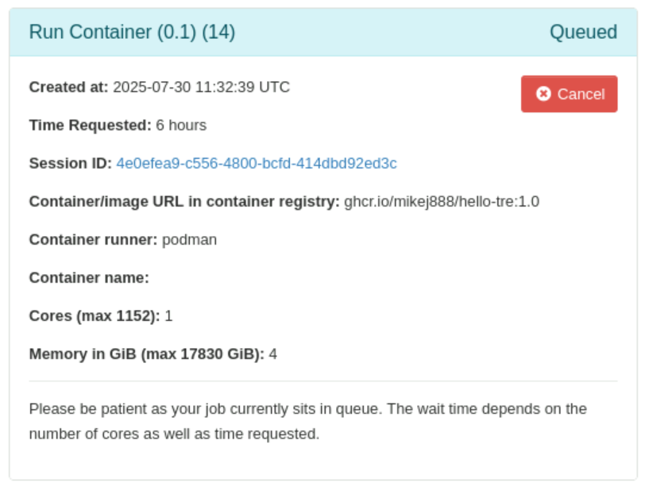 Run Batch Container app job card showing job status as 'Queued'
When the job starts, the Job status on the job card will update to 'Starting' and 'Time Requested' will switch to 'Time Remaining', the time your job has left to run before it is cancelled by the job scheduler.
When the Job status updates to 'Running', a Host link will appear on the job card. This is the back-end on which the job, and so the epcc-ces-hello-tre container, is now running. A message of form 'Container epcc-ces-hello-tre-SESSION_ID is now running. Please wait until the container completes.' will also appear on the job card.
 Run Batch Container app job card showing job status as 'Running'
Run Batch Container app job card showing job status as 'Running'
All going well, the container, and its job, should complete quickly.
The Job status on the job card will update to 'Completed'.
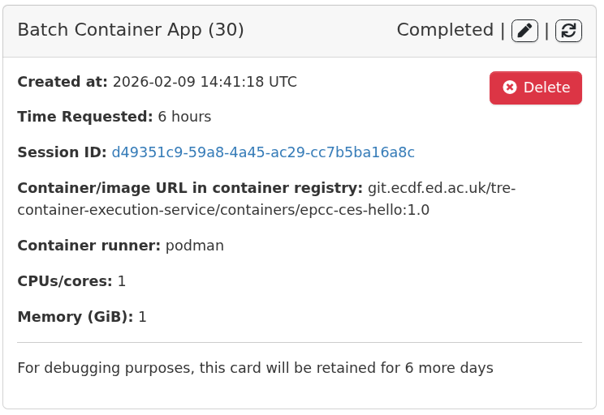 Run Batch Container app job card showing job status as 'Completed'
How containers exchange files with back-ends
When a container is run, three directories on the back-end are always mounted into the container:
| Back-end directory | Container directory | Description |
|---|---|---|
Project-specific /safe_data subdirectory |
$HOME/safe_data OR /safe_data/PROJECT_SUBDIRECTORY |
If $HOME/safe_data exists in your home directory on the back-end, then that is mounted. Otherwise, a subdirectory of /safe_data corresponding to your project (and inferred from your user group) is mounted, if such a subdirectory can be found. |
$HOME/safe_outputs/APP_SHORT_NAME/SESSION_ID |
/safe_outputs |
APP_SHORT_NAME is a short-name for an app (e.g., jupyter for Run JupyterLab Container). SESSION_ID a unique session identifier created when an app is run. This directory is created in your home directory on the back-end when your container runs. The directory persists after the job which created the container ends. |
$HOME/scratch/APP_SHORT_NAME/SESSION_ID |
/scratch |
APP_SHORT_NAME and SESSION_ID are as above. This directory is also created in your home directory on the back-end when your container runs. This directory exists for the duration of the job which created the container. The SESSION_ID sub-directory is deleted when the job which created the container ends. |
Together, these mounts provides a means for data, configuration files, scripts and code to be shared between the back-end on which the container is running and the environment within the container itself. Creating or editing a file within any of these directories on the back-end means that the changes will be available within the container, and vice-versa.
Note
Some apps may mount additional app-specific directories into a container and/or allow you to do so yourself.
When the epcc-ces-hello-tre container is run, it writes two files into /safe_outputs within the container, and so into a $HOME/outputs-NUMBER on your home directory on the back-end:
safe_data.txt, which lists a selection of directories and files in the/safe_data/PROJECT_SUBDIRECTORYdirectory that was mounted into the container at/safe_data.safe_outputs.txtwhich has aThis text is in safe_outputs.txtmessage.
View the container's output files
As mentioned earlier, for most back-ends, your home directory is common to both the Open OnDemand VM and the back-ends so any files created within your home directory on a back-end will be available on the Open OnDemand VM, and vice-versa. This includes the contents of the safe_outputs/APP_SHORT_NAME/SESSION_ID and scratch/APP_SHORT_NAME/SESSION_ID directories. However, your project data files, in a project-specific directory under /safe_data are not available on the Open OnDemand VM.
For DataLoch users, your home directory is not common to both the Open OnDemand VM and the back-end, so you cannot use the File Manager to browse files created by the container. However, another way of viewing these files will be described shortly.
View the safe_outputs/batch_container/SESSION_ID directory via the Open OnDemand File Manager:
- Select the Files menu, Home Directory option to open the File Manager.
- Click Home Directory, to go to your home directory.
- Click
safe_outputs/batch_container/SESSION_IDview the directory - Click on
safe_data.txtandsafe_outputs.txtto view their contents.
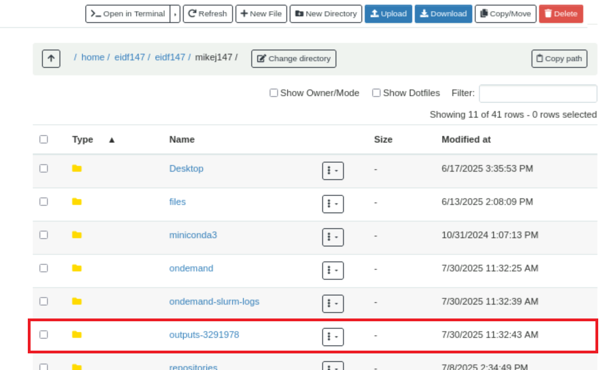 File Manager showing home directory after Run Batch Container app completes
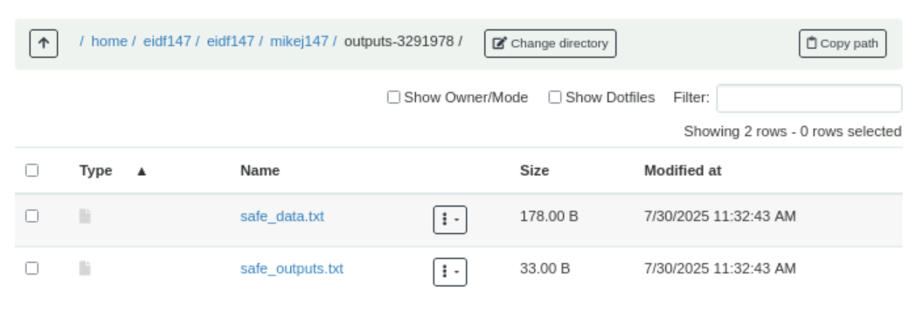 File Manager showing outputs directory contents after Run Batch Container app completes
An alternative to the File Manager is to log in to the back-end and view the files there, which can be done for any back-end.
View the safe_outputs/batch_container/SESSION_ID directory within the back-end:
- Select Clusters menu, back-end Shell Access option, to log into the back-end.
-
Change into your home directory and view the directory and its files and their contents.
cd ls safe_outputs/batch_container/SESSION_ID/ cat safe_outputs/batch_container/SESSION_ID/safe_data.txt cat safe_outputs/batch_container/SESSION_ID/safe_outputs.txt
As you have accessed Open OnDemand from your 'desktop' VM, you could also access the files directly on your 'desktop' VM, but we used the back-end Shell Access option to introduce this feature of Open OnDemand.
View the app log file within the job context directory
When an app job runs, a log file is created within the job-specific job context directory in an app-specific directory under your ondemand directory. This log file includes information from the app itself plus logs captured from the container as it runs. It can be useful to check the log file when debugging.
For the epcc-ces-hello-tre container, the logs includes information about the mounts and also a greeting and sleep (pause) information based on the environment variable and container arguments you defined in the app's form.
As for the output files, you can use either the File Manager (non-DataLoch safe haven users only) or log into the back-end (all users) to view the log file.
View the log file via the Open OnDemand File Manager:
- Click the Session ID link in the job card to open the File Manager, pointing at the job context directory for the job on the Open OnDemand VM.
- Click on the log file,
output.log.
 File Manager showing log file within Run Batch Container app's job context directory
File Manager showing log file within Run Batch Container app's job context directory
View the log file within the back-end:
- Select Clusters menu, back-end Shell Access option to log into the back-end.
-
Change into the job context directory for the job on the back-end and show the log file where
SESSION_IDcan be seen on the Session ID link on the job card:cd ondemand/data/sys/dashboard/batch_connect/sys/batch_container_app/output/SESSION_ID/ -
View the log file:
cat output.log
For the epcc-ces-hello-tre container, the log file includes four types of log information. There is information from the app itself and it sets itself up to run the container:
Wed Jul 30 11:32:41 UTC 2025 before.sh: JOB_FOLDER: /home/someuser/ondemand/data/sys/dashboard/batch_connect/sys/batch_container_app/output/4e0efea9-c556-4800-bcfd-414dbd92ed3c
Script starting...
...
Wed Jul 30 11:32:41 UTC 2025 script.sh: Running ces-pull podman ...
...
This is followed by information from the container itself about your user name within the container and the directories mounted into the container:
Hello TRE!
Your container is now running.
Your user 'id' within the container is: uid=0(root) gid=0(root) groups=0(root).
Check mounted directories, ownership, permissions, file system type:
/safe_data: nobody (65534) root(0) drwxrwx--- nfs
/scratch: root (0) root(0) drwxr-xr-x ext2/ext3
/safe_outputs: root (0) root(0) drwxr-xr-x ext2/ext3
Check read/write access to mounted directories
List /safe_data contents and write to /safe_outputs/safe_data_files.out
Check write to /safe_outputs
Contents of /safe_outputs/safe_outputs.txt:
This text is in safe_outputs.txt
Check write to /scratch
Contents of /scratch/scratch.txt:
This text is in scratch.txt
Look for optional 'HELLO_TRE' environment variable
Found optional 'HELLO_TRE' environment variable with value: Hello there
Parse command-line arguments
Number of arguments: 4
Arguments (one per line):
-d
10
-n
Mike
For some containers run via Podman, including epcc-ces-hello-tre, you are the 'root' user within the container but only within the container. This is why the files in the mounts belong to a 'root' or 'nobody' user and 'root' group when accessed from within the container. Any files you create in the mounted directories will be owned by your own user, and user group, on the back-end. You can check this yourself by inspecting the file ownership of the files within safe_outputs/batch_container/SESSION_ID.
Returning to the log file, there is information from the container itself about your user name within the container and the directories mounted into the container, including a message created using the value of the HELLO_TRE environment variable and the -n container argument, messages indicating that the container is sleeping for the duration specified by the -d container argument, and a farewell message, again using the -n container argument.
Hello there Mike!
Sleeping for 10 seconds...
1
2
3
4
5
6
7
8
9
10
...and awake!
For more container examples and ideas, visit:
https://github.com/EPCCed/tre-container-samples
Goodbye Mike!
Finally, the log file includes information from the app itself as it completes:
Cleaning up...
Run the Active Jobs app
Active Jobs allows you to see which of your jobs have been submitted, are running, or have completed.
Click the 'Active Jobs' app on the Open OnDemand home page.
The Active Jobs app will open to show a table of running and recently completed jobs.
You will see an 'epcc-ces-hello-tre:1.1' entry for your app's job. Run Batch Container app jobs are named using the container/image name cited in the container/image URL.
Your job will have a status of 'Completed'.
Each job has a unique job ID created by the job scheduler when you submitted the job. Unfortunately, the job ID is not the same as the session ID for an app created by Open OnDemand. Rather, the job ID is created by the job scheduler. Each job created by an app has both an Open OnDemand session ID and a job scheduler job ID.
To see more details about the job, click the > button, by the job.
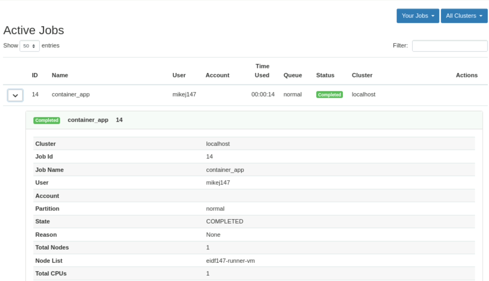 Active Jobs app showing details of completed Run Batch Container app job
If any app does not run promptly, but is in a 'Queued' state, then the Active Jobs app can provide you with information on other jobs that are running and for which you may have to wait until one or more have completed before your app's job runs.
Run the Run JupyterLab Container app
Run JupyterLab Container runs an interactive JupyterLab service, within a container, on a back-end.
Click the 'Run JupyterLab Container' app on the Open OnDemand home page.
The Run JupyterLab Container app form will open.
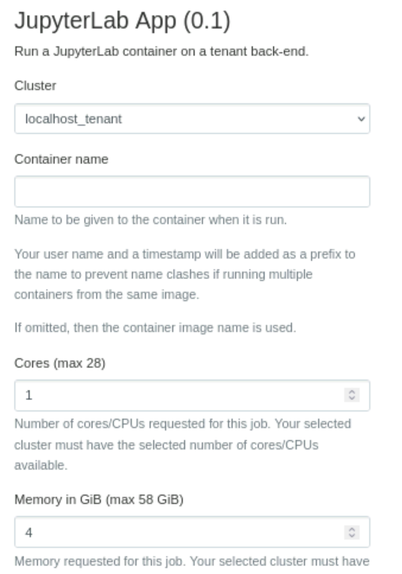 Excerpt of Run JupyterLab Container app form
For Cluster, select the 'desktop' VM on which you are running the browser in which you are using Open OnDemand. If there is only one back-end available to you then this form field won't be shown.
Leave the other settings as-is.
Launch the Run JupyterLab Container app job
Click Launch.
Again, Open OnDemand will create job files for the app in a job-specific job context directory in an app-specific directory under your ondemand directory and then submits the job for the app to the job scheduler.
Again, Open OnDemand will show an app job card with information about the app's job including:
- Job status (on the top right of the job card): initially 'Queued'.
- 'Created at': The time the job was submitted.
- 'Time Requested': The runtime requested for the job which defaults to 6 hours.
- 'Session ID': An auto-generated value which is used as the name of the job-specific job context directory. This is a link to open a File Manager pointing at the job context directory.
- App-specific information, which includes values from the app form:
- 'Connection timeout (s)': when the app's job starts running, the app will then wait for JupyterLab to become available. If this does not occur within this app-specific period, then the app's job will cancel itself.
- 'CPUs/cores': The value you selected on the app form.
- 'Memory (GiB)' The value you selected on the app form.
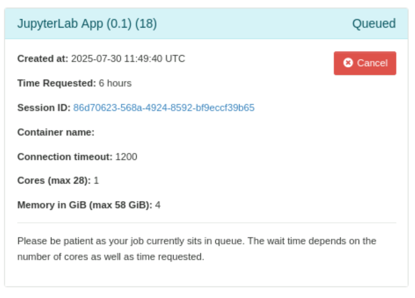 Run JupyterLab Container app job card showing job status as 'Queued'
When the job starts, the Job status on the job card will update to 'Starting' and 'Time Requested' will switch to 'Time Remaining', the time your job has left to run before it is cancelled by the job scheduler.
When the Job status updates to 'Running', a Host link will appear on the job card, which allows you to log in to the back-end on which the job, and so JupyterLab, is now running.
A Connect to JupyterLab button will appear. JupyterLab is now ready for use.
A 'JupyterLab is running in Podman container epcc-ces-jupyter-SESSION_ID' message will also appear.
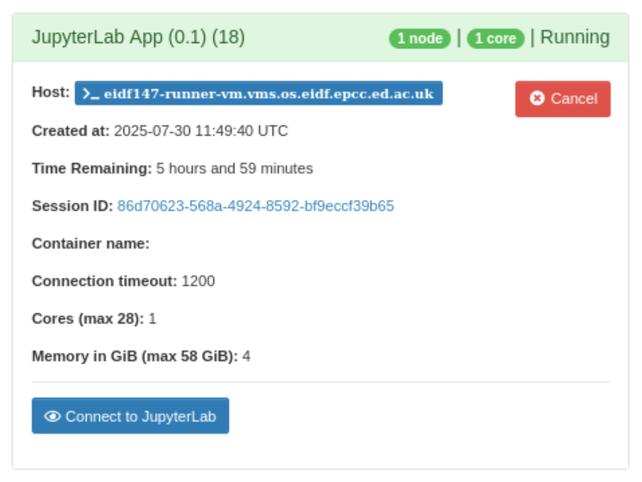 Run JupyterLab Container app job card showing job status as 'Running'
Click Connect to JupyterLab. A new browser tab will open with JupyterLab.
You may wonder why you were not prompted for a username and password. JupyterLab runs within the container as a 'root' user. The 'root' user is within the context of the container only. JupyterLab is protected with an auto-generated password. The Connect to JupyterLab button is configured to log you into JupyterLab using this password automatically.
 JupyterLab
JupyterLab
Use JupyterLab to explore how directories on a back-end are mounted into a container
We can use JupyterLab to further explore how directories on a back-end are mounted into a container.
Click the Host link to log into the back-end on which the job, and JupyterLab container, is running.
Now, within JupyterLab, click the Terminal icon within the 'Launcher' tab. This opens up a command-line session within JupyterLab.
Now run the following:
ls /safe_data/
You will see the contents of your /safe_data/PROJECT_SUBDIRECTORY on the back-end.
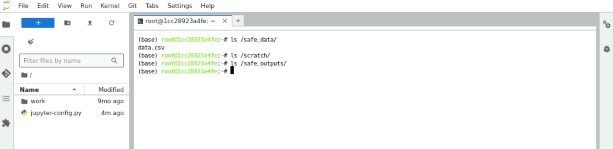 Viewing mounted directories within JupyterLab
Check this by running, in your Open OnDemand command-line session with the back-end:
ls /safe_data/PROJECT_SUBDIRECTORY/
The same files and subdirectories should be listed.
Now, within the JupyterLab Terminal, create a file in each directory (touch creates an empty file):
touch /scratch/hello-from-jupyterlab-to-scratch.txt
touch /safe_outputs/hello-from-jupyterlab-to-outputs.txt
List the contents of the scratch and safe_outputs and directories:
ls -1 scratch/jupyter/SESSION_ID
ls -1 safe_outputs/jupyter/SESSION_ID
You should see the above files:
hello-from-jupyterlab-to-scratch.txt
hello-from-jupyterlab-to-outputs.txt
Now, within your Open OnDemand command-line session with the back-end, create files in these directories:
touch scratch/jupyter/SESSION_ID/hello-from-scratch-to-jupyterlab.txt
touch safe_outputs/jupyter/SESSION_ID/hello-from-outputs-to-jupyterlab.txt
Then, within the JupyterLab Terminal, list the contents of the corresponding /scratch directory and you should see the files you created on the back-end plus those you created within JupyterLab:
ls -1 /scratch/
hello-from-jupyterlab-to-scratch.txt
hello-from-scratch-to-jupyterlab.txt
And similarly for /safe_outputs:
ls -1 /safe_outputs/
hello-from-jupyterlab-to-outputs.txt
hello-from-outputs-to-jupyterlab.txt
Hopefully, this demonstrates how the mounted directories provides a means for data, configuration files, scripts and code to be shared between the back-end on which a container is running and the environment within the container itself.
As a reminder, safe_outputs/jupyter/SESSION_ID will persist after the job which created the container ends but the SESSION_ID subdirectory in scratch/jupyter will be deleted.
Revisit the Active Jobs app
Click the 'Active Jobs' app on the Open OnDemand home page.
You will see a 'jupyter_app' entry for your app's job. All Run JupyterLab Container app jobs have this name.
You will also see a unique job ID for this job.
Your job will have a status of 'Running'.
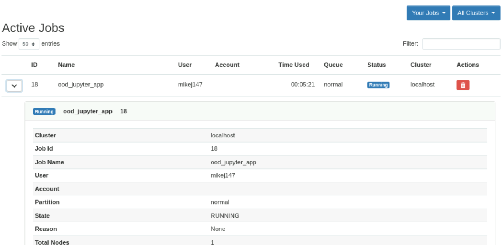 Active Jobs app showing details of running Run JupyterLab Container app job
Finish your Run JupyterLab Container app job
You can end your job by as follows:
- Either, shut down JupyterLab via the File menu, Shut Down option.
- Or, click Cancel on the app's job card.
The Job status on the job card will update to 'Completed'.
 Run JupyterLab Container app job card showing job status as 'Completed'
Run JupyterLab Container app job card showing job status as 'Completed'
Click the 'Active Jobs' app on the Open OnDemand home page.
Your job will now have a status of 'Completed'.
Use $HOME/safe_data
As mentioned, if $HOME/safe_data exists in your home directory on the back-end, then that is mounted into a container. Otherwise, a subdirectory of /safe_data corresponding to your project (and inferred from your user group) is mounted, if such a subdirectory can be found.
Using the File Manager, or via a session on the back-end accessed from within Open OnDemand, or on the 'desktop' VM from which you accessed Open OnDemand, create a $HOME/safe_data directory and then create some files in it. For example:
mkdir $HOME/safe_data/
touch $HOME/safe_data/a.txt
touch $HOME/safe_data/b.txt
touch $HOME/safe_data/c.txt
Rerun the Run JupyterLab Container app and, again, once JupyterLab has started, click the Terminal icon within the 'Launcher' tab.
List the contents of /safe_data:
ls -1 /safe_data/
and you should see the files you created:
a.txt
b.txt
c.txt
Remember to delete $HOME/safe_data when you are done.
More information
The following pages provide detailed information about all aspects of Open OnDemand introduced in this walkthrough: